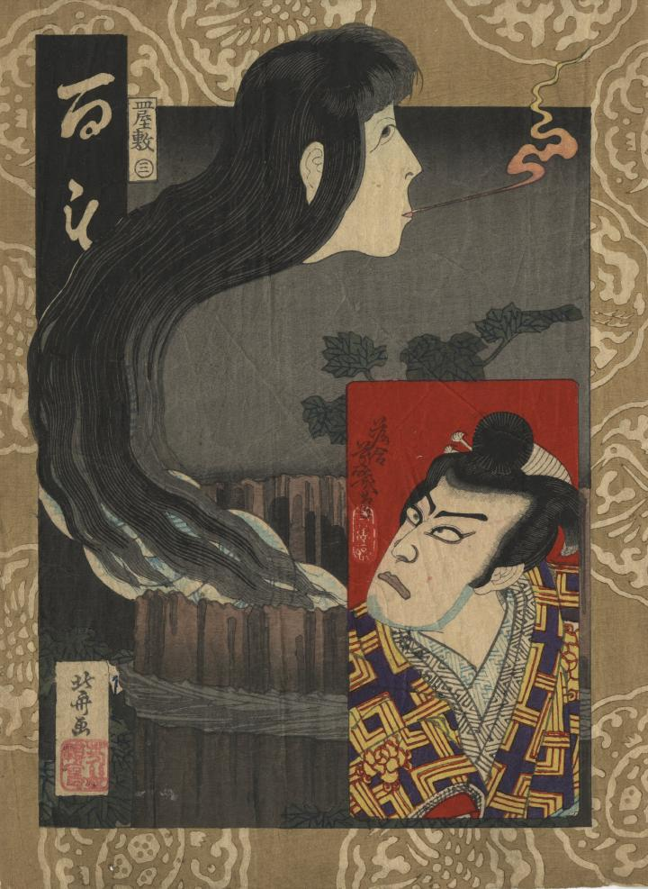

番町皿屋敷のお菊を描いたもの。お菊伝承をなぞらえて、首の部分が青絵付けの皿が重なっている姿で、井戸から出現している。長い髪が首にまとわりついている。口から火が出ている。
著作者：落合芳幾／出典：親書誌：U426_nichibunken_0415：百もの語 皿屋敷；ヒャクモノガタリ サラヤシキ／日付：2015／資源識別子：U426_nichibunken_0415_0001_0000
Copyright (c)2010- International Research Center for Japanese Studies, Kyoto, Japan. All rights reserved.